작업환경 구축
R을 설치하고, uv로 Python 3.12 가상환경을 만들고, VS Code에서 두 언어의 노트북을 실행한다.
- 자기 컴퓨터(Windows 또는 macOS)에 R을 설치할 수 있다.
- uv로 Python 3.12 가상환경을 만들 수 있다.
- VS Code에서 Python 노트북과 R 노트북을 각각 실행할 수 있다.
- AI 에이전트에게 지킬 규칙을 파일로 알려줄 수 있다.
1.1무엇을 설치하는가
설치할 것은 네 가지다. 아래 순서대로 진행한다.
| 순서 | 구성 요소 | 역할 | 받는 곳 |
|---|---|---|---|
| 1 | R | R 코드 실행 | r-project.org |
| 2 | Visual Studio Code와 확장 | 노트북(.ipynb)을 열고 실행하는 편집기 | code.visualstudio.com |
| 3 | uv | Python 3.12와 패키지를 프로젝트 폴더 안에 설치 | 터미널 명령 한 줄 |
| 4 | IRkernel | R을 노트북에 연결 | R 안에서 설치 |
Python은 따로 내려받지 않는다. uv가 Python 3.12를 대신 받아 준다.
1.2R 설치하기
R은 운영체제에 따라 설치 파일이 다르다. 두 경우 모두 출발점은 같다.
https://r-project.org에 접속해 왼쪽 메뉴의 CRAN(또는 본문의 download R)을 누른다.- 내려받을 서버(미러) 목록이 나온다. 맨 위의 0-Cloud나 Korea 아래의 주소 중 하나를 고른다.
- 2026년 9월 현재 대한민국에서 제공하는 Mirror Site 가 없어 다음의 기본 Repository 선택
- 0-Cloud:
https://cloud.r-project.org/ - 자기 운영체제에 맞는 링크를 누르고 아래 설명을 따른다.
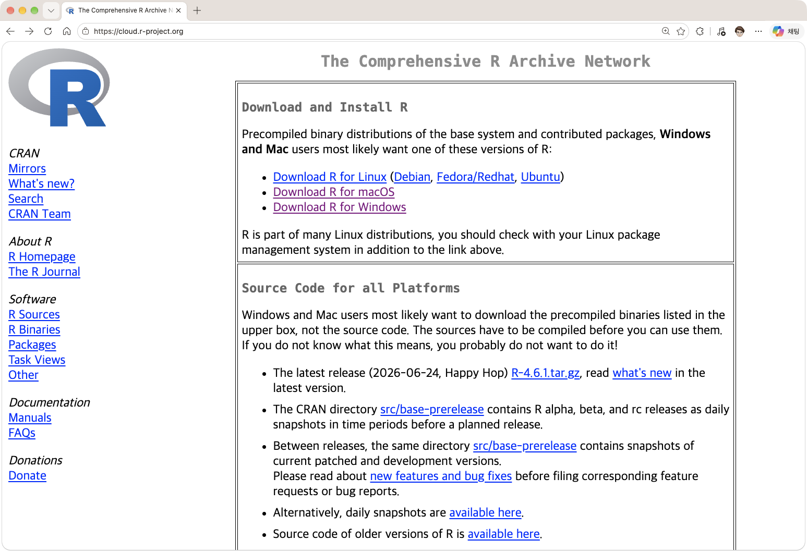
Windows
- Download R for Windows Click
- base Click
- 맨 위의 Download R-4.x.x for Windows를 눌러 설치파일을 받는다.
- 받은 파일을 실행한다. 설치 언어는 한국어를 고르고, 나머지는 기본값 그대로 다음을 눌러 끝낸다.
- 설치 위치(기본값
C:\Program Files\R\R-4.x.x)를 확인한다. 1.5에서 쓴다.
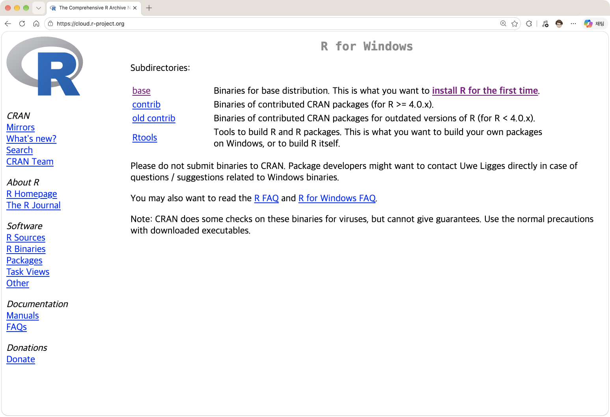
macOS
- 먼저 자기 Mac의 프로세서 종류를 확인한다. 화면 왼쪽 위 사과 메뉴 → 이 Mac에 관하여를 열고 아래 표와 맞춰 본다.
- Download R for macOS를 누른다.
- 표에서 확인한 프로세서 종류에 맞는
.pkg파일을 받는다. - 받은 파일을 실행하고 기본값 그대로 계속을 눌러 설치한다.
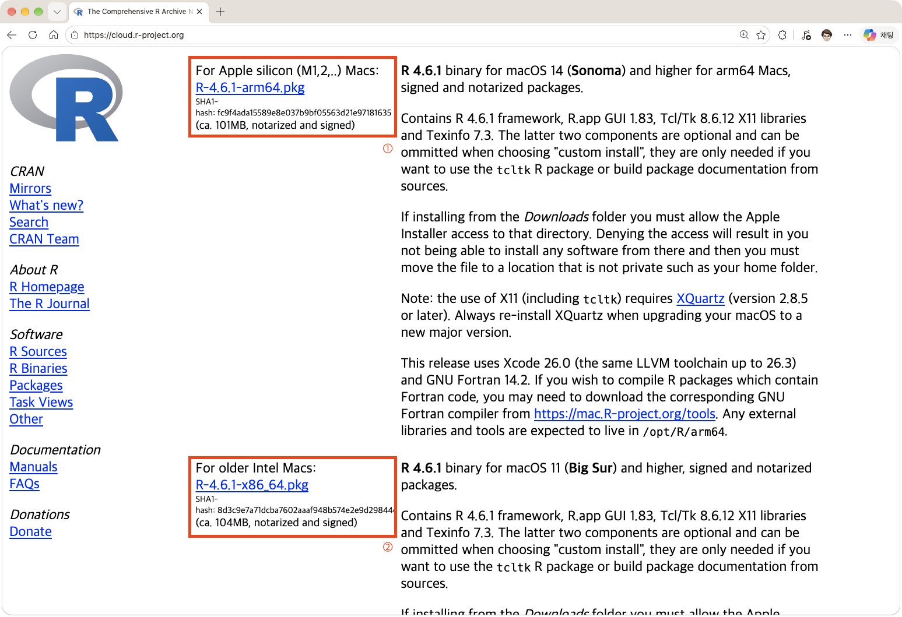
| 화면에 나오는 것 | 프로세서 종류 | 받을 파일 |
|---|---|---|
| 칩: Apple M1, M2, M3 … | Apple silicon | 이름에 arm64가 있는 .pkg |
| 프로세서: … Intel … | Intel | 이름에 x86_64가 있는 .pkg |
arm64와 x86_64를 꼭 확인한다.설치 확인
설치된 R 프로그램을 실행한다(Windows: 시작 메뉴의 R, macOS: 응용 프로그램의 R). 창이 뜨면 다음 코드를 입력해 버전이 출력되는지 본다
R.version.string
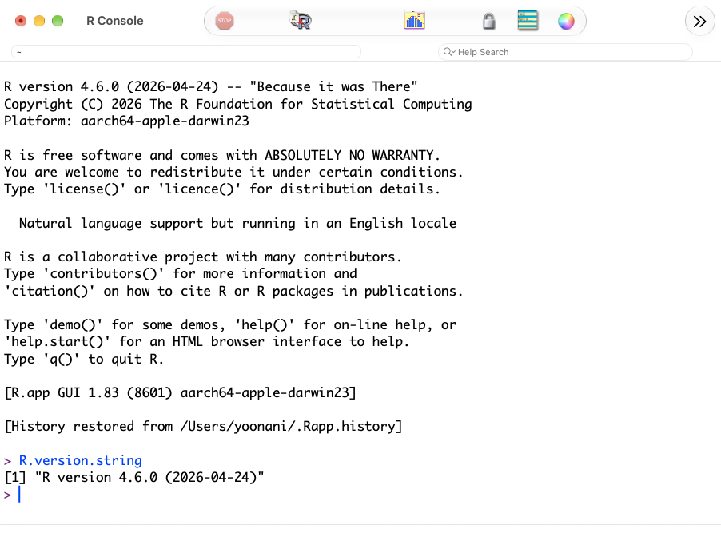
1.3VS Code와 확장(Extensions) 설치하기
- https://code.visualstudio.com/에서 설치 파일을 받아 설치한다.
- VS Code 좌측 Acitivity Bar의 Extentions 패널에서
Python과Jupyter(둘 다 Microsoft 제공) Extension을 찾아 설치한다.
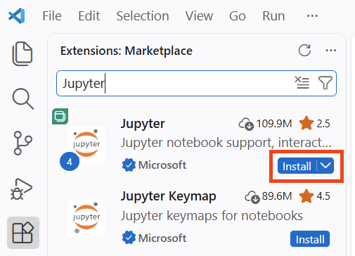
- Open Folder 를 통해 작업 폴더 생성 및 열기 :
readtheworld - Terminal 메뉴에서 New Terminal을 클릭해 Terminal을 연다.
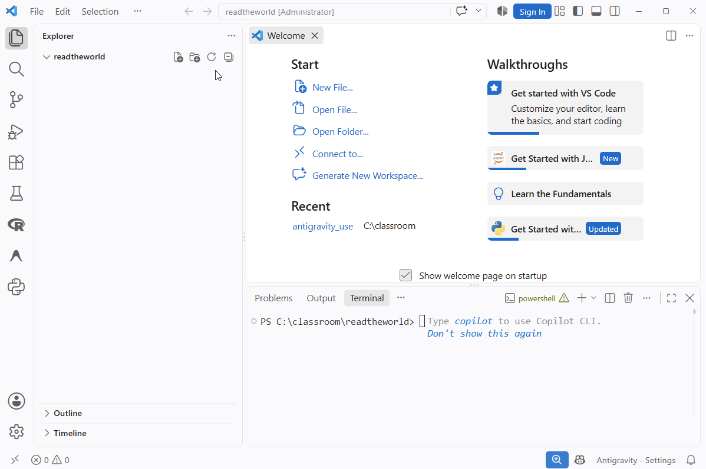
C:\classroom\readtheworld, ~/work/readtheworld. 사용자 이름이 한글인 Windows에서 특히 문제가 잦다.1.4uv로 Python 가상환경 만들기
가상환경은 이 프로젝트만 쓰는 Python을 폴더 안에 따로 두는 것이다. 다른 수업이나 프로그램의 Python과 섞이지 않고, 모든 학생이 같은 버전(3.12)을 쓰게 된다.
uv 설치
powershell -ExecutionPolicy ByPass -c "irm https://astral.sh/uv/install.ps1 | iex"
curl -LsSf https://astral.sh/uv/install.sh | sh
설치가 끝나면 터미널을 닫고 새로 연다. uv --version을 입력해 버전이 나오면 된다.
프로젝트 초기화와 가상환경
readtheworld 폴더가 열린 터미널에서 아래 두 줄을 차례로 실행한다. 두 운영체제에서 명령이 같다.
uv init --python 3.12 uv venv
| 명령 | 하는 일 | 생기는 것 |
|---|---|---|
uv init --python 3.12 | 이 폴더를 Python 3.12 프로젝트로 등록한다 | pyproject.toml, .python-version, main.py, README.md |
uv venv | 가상환경을 만든다. Python 3.12가 없으면 자동으로 받는다 | .venv 폴더 |
가상환경 켜기
만든 가상환경을 켠다(활성화). 패키지를 설치하기 전에 켜 둔다. 운영체제에 따라 명령이 다르다.
.venv\Scripts\activate
source .venv/bin/activate
터미널 줄 맨 앞에 (readtheworld)가 붙으면 켜진 것이다. 가상환경은 터미널마다 따로 켠다. 터미널을 새로 열면 다시 켜야 한다.
패키지 설치
가상환경이 켜진 터미널에서 uv add로 패키지를 설치한다. 설치한 목록이 pyproject.toml에 기록되어, 다른 컴퓨터에서도 같은 환경을 다시 만들 수 있다.
uv add jupyter ipykernel pandas matplotlib
노트북에서 가상환경 고르기
notebooks폴더를 만들고 그 안에test_py.ipynb파일을 만든다.- 노트북 오른쪽 위의 Select Kernel을 누른다(그림 ①).
- Python Environments...를 고른다(그림 ②).
- 목록에서 별표가 붙은
readtheworld를 고른다(그림 ③, ④). 경로가.venv로 시작하는 것이 이 프로젝트의 가상환경이다. - 셀에
import pandas를 입력하고 실행해 오류가 없는지 본다.
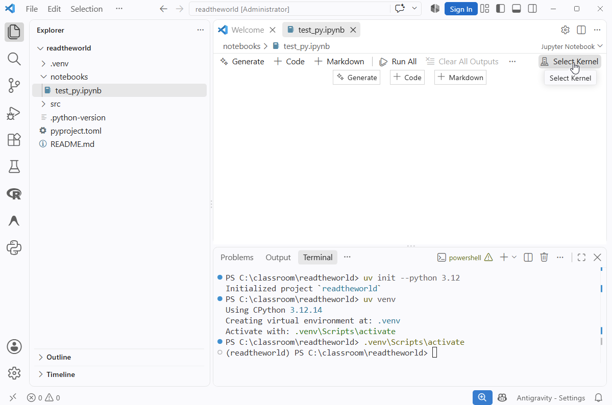
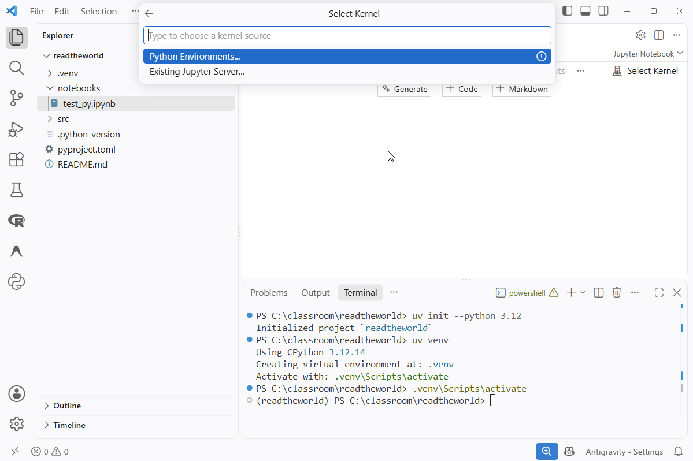
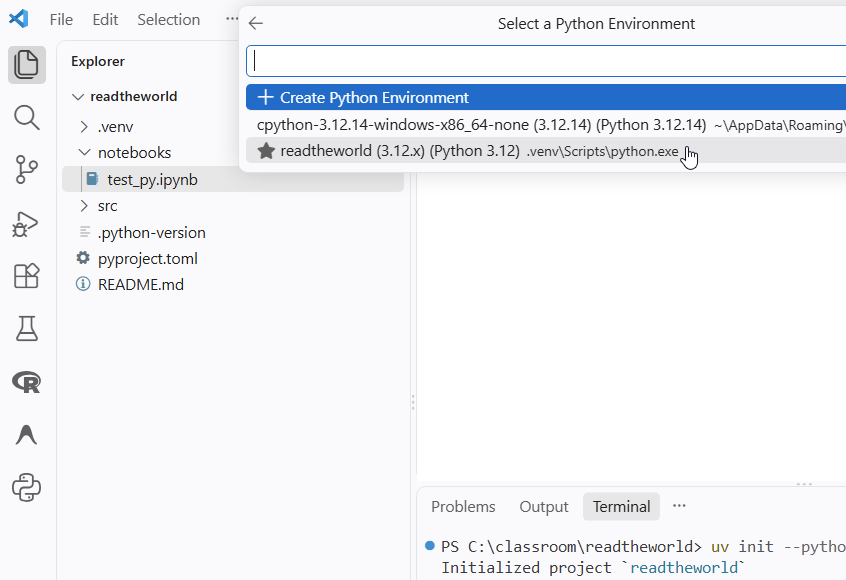
.venv로 시작하는 readtheworld를 찾는다.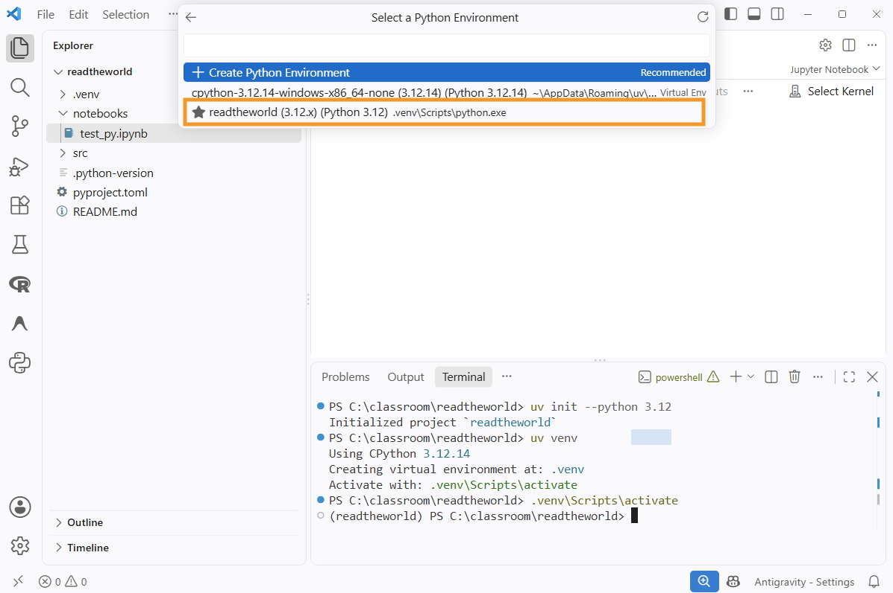
readtheworld를 고른다.그림을 누르면 크게 볼 수 있다.
1.5R을 노트북에 연결하기
노트북은 원래 Python용 도구다. R을 노트북에서 쓰려면 R 패키지 IRkernel을 설치하고 Jupyter에 등록해야 한다. 등록할 때 R이 jupyter 명령을 찾을 수 있어야 하므로, 가상환경을 켠 터미널에서 R을 실행한다. 한 번만 하면 된다.
1단계: 가상환경이 켜져 있는지 확인하기
터미널 줄 맨 앞에 (readtheworld)가 있는지 본다. 없으면(터미널을 새로 열었다면) 1.4의 가상환경 켜기를 다시 한다.
2단계: 그 터미널에서 R 실행하기
& "C:\Program Files\R\R-4.x.x\bin\R.exe"
R
Windows는 R이 설치된 위치를 직접 적어야 한다. R-4.x.x 자리에 1.2에서 적어 둔 실제 버전 번호를 넣는다.
3단계: IRkernel을 설치하고 커널 등록하기
R이 실행되어 > 표시가 나오면 아래 세 줄을 한 줄씩 차례로 실행한다. 첫 줄은 IRkernel을 내려받아 설치하고, 둘째 줄은 설치한 것을 Jupyter에 R 커널로 등록한다.
install.packages("IRkernel", repos = "https://cloud.r-project.org")
IRkernel::installspec() # Jupyter에 R 커널 등록
q() # R 종료. 저장 여부를 물으면 nrepos는 패키지를 내려받을 서버다. 적어 두면 서버를 고르라는 질문이 나오지 않는다. 설치 중에 개인 라이브러리(personal library)를 쓸지 물으면 yes를 입력한다.
4단계: 노트북에서 R 커널 고르기
- VS Code를 다시 시작하고,
notebooks폴더에 새 노트북test_R.ipynb를 만든다. - 노트북 오른쪽 위의 Select Kernel을 누르고 Select Another Kernel...을 고른다(그림 ①).
- Jupyter Kernel...을 고른다(그림 ②).
- 목록의 R을 고른다(그림 ③).
- 오른쪽 위 표시가 R로 바뀌면 성공이다(그림 ④).
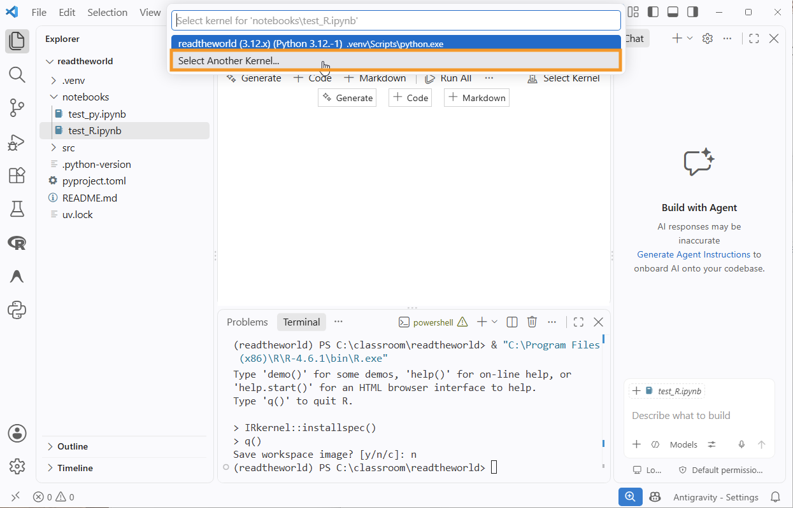
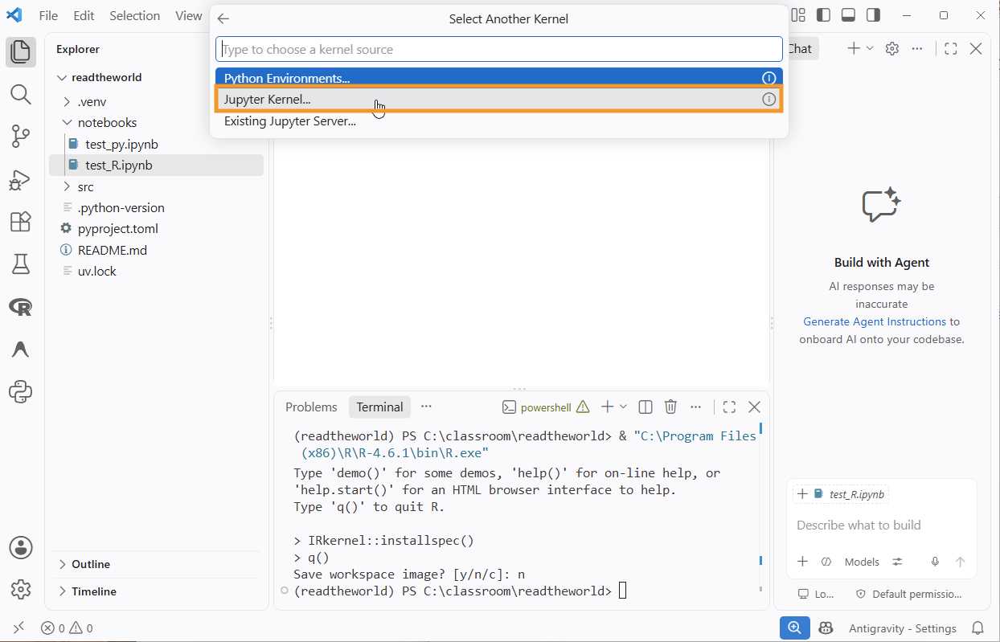
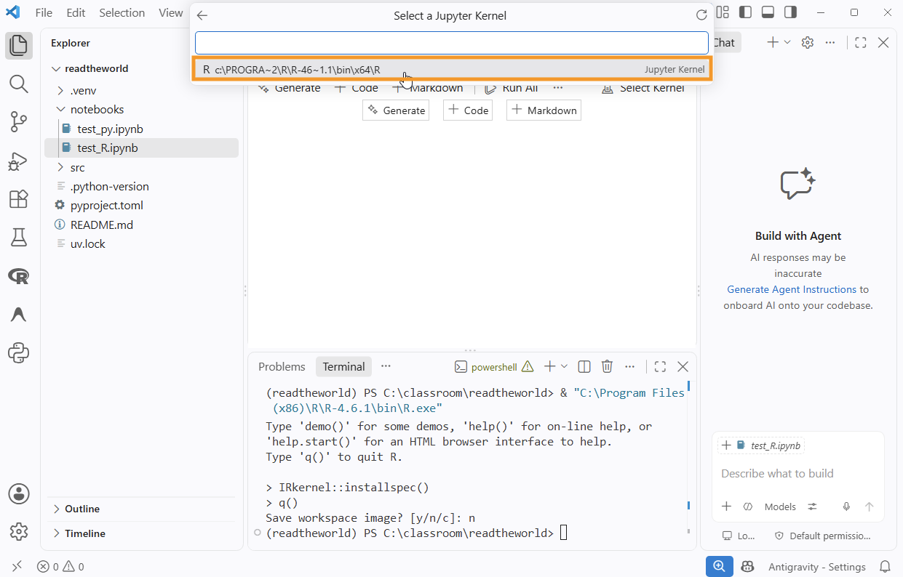
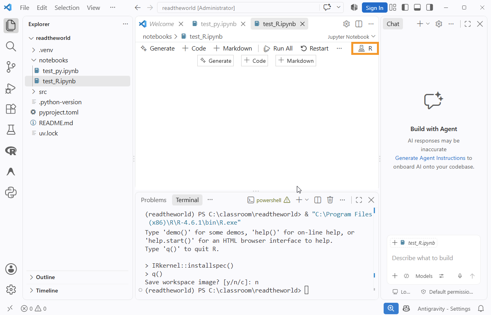
그림을 누르면 크게 볼 수 있다.
jupyter를 찾을 수 없다는 오류가 나면 1단계의 가상환경이 켜지지 않은 것이다. 터미널 줄 맨 앞에 (readtheworld)가 있는지 확인한다. Windows에서 activate가 “스크립트를 실행할 수 없다”며 막혔다면 1.4의 참고 상자 가상환경이 켜지지 않을 때를 따른다.1.6프로젝트 폴더 구조
여기까지 마치면 폴더는 아래와 같다. dataset과 output 폴더는 직접 만든다. 에이전트도 이 폴더 안만 본다.
readtheworld/ ├─ .venv/ 가상환경. 직접 건드리지 않는다 ├─ pyproject.toml 설치한 Python 패키지 목록 ├─ dataset/ │ ├─ raw/ 내려받은 원본. 절대 고치지 않는다 │ └─ working/ 정리한 결과를 저장하는 곳 ├─ notebooks/ 장별 노트북 (R용, Python용 한 쌍씩) ├─ output/ 그림과 표 └─ AGENTS.md 에이전트에게 주는 규칙
노트북은 장마다 두 개씩 만든다. 예: 3_명령_R.ipynb, 3_명령_py.ipynb. 셀 순서를 똑같이 맞춰 두면 VS Code에서 좌우로 띄워 비교하기 좋다.
1.7AI 에이전트와 일하는 규칙
에이전트는 폴더의 파일과 노트북 셀, 터미널 출력을 읽는다. 여러분의 머릿속 계획이나 화면에 떠 있는 그림은 보지 못한다. 그래서 규칙을 글로 적어 둔다.
# 이 프로젝트의 규칙 - dataset/raw 의 파일은 읽기만 한다. 수정하거나 지우지 않는다. - 정리한 데이터는 dataset/working 에, 그림은 output 에 저장한다. - Python은 uv 가상환경(.venv, Python 3.12)을 쓴다. 패키지는 uv add 로만 설치하고 pip install 은 쓰지 않는다. - R은 tidyverse, Python은 pandas와 matplotlib만 쓴다. - 코드를 고칠 때는 무엇을 왜 바꿨는지 한 줄로 설명한다. - 데이터를 바꾸는 작업 전후에는 행 수를 출력해서 보여준다.
규칙 파일의 이름과 위치는 에이전트 종류에 따라 다르다(예: AGENTS.md, CLAUDE.md, .github/copilot-instructions.md). 자기가 쓰는 에이전트에 맞는 이름으로 저장한다.
에이전트에게 요청할 때의 세 가지 습관:
- 데이터를 먼저 보여준다. 앞 다섯 줄과 열 이름을 보여준 뒤에 요청한다.
- 한 번에 한 단계만 시킨다. “전처리 다 해줘”가 아니라 “사용일자를 날짜형으로 바꿔줘”.
- 고친 뒤에는 처음부터 다시 실행한다. 커널을 재시작하고 전체 셀을 실행해서 오류 없이 끝나는지 확인한다.
1.8동작 확인
tidyverse 설치하기
R 쪽은 확인하기 전에 tidyverse를 설치한다. R 노트북(test_R.ipynb)의 셀에서 아래 한 줄을 실행한다. 한 번만 하면 되고, 몇 분 걸린다.
install.packages("tidyverse", repos = "https://cloud.r-project.org")tidyverse는 패키지 하나가 아니라, 데이터 분석에 쓰는 패키지들을 한데 묶은 패키지의 패키지다. 설치하면 아래 30개가 함께 설치된다(tidyverse 2.0.0 기준). 이 패키지들이 내부에서 쓰는 다른 패키지도 자동으로 설치되지만 여기에는 적지 않았다.
library(tidyverse) 한 줄로 불러오는 핵심 9개
| 패키지 | 하는 일 | 이 가이드에서 |
|---|---|---|
ggplot2 | 그래프 그리기 | 5·6장의 모든 그림 |
dplyr | 표 다루기: 열 고르기, 행 거르기, 새 열 만들기, 그룹 요약, 조인 | 3장부터 계속 |
tidyr | 표 모양 바꾸기(넓은 형식 ↔ 긴 형식), 결측 채우기 | 4장, 과제 |
readr | CSV 같은 텍스트 파일 읽고 쓰기 | 2·4장 |
tibble | 보기 좋게 출력되는 데이터프레임(tibble) | 바로 아래 확인 셀 |
stringr | 문자열과 정규표현식 | 3장 |
lubridate | 날짜와 시각 | 3·4장 |
purrr | 같은 작업을 여러 대상에 되풀이해 적용하기 | 쓰지 않는다 |
forcats | 범주형 자료(factor) 다루기 | 쓰지 않는다 |
함께 설치되지만 필요할 때 따로 불러오는 21개
| 쓰임 | 패키지(다루는 것) |
|---|---|
| 파일·웹에서 자료 가져오기 | readxl(엑셀 파일), haven(SPSS·Stata·SAS 파일), googlesheets4(구글 시트), googledrive(구글 드라이브의 파일), rvest(웹 페이지에서 자료 긁어 오기), httr(웹 API에 요청 보내기), jsonlite(JSON), xml2(XML) |
| 다른 저장 방식을 dplyr 문법으로 | dbplyr(데이터베이스), dtplyr(큰 표를 빠르게 다루는 data.table) |
| 통계 모형 | broom(모형 결과를 표로 정리), modelr(모형 만들기 보조) |
| 작업 보조 | hms(시:분:초 자료형), magrittr(%>% 파이프), reprex(남에게 보여 줄 재현 예제 만들기), conflicted(이름이 겹치는 함수 알려 주기), ragg(그림을 파일로 저장하는 장치) |
| tidyverse 내부의 기반 도구 | rlang(프로그래밍 도구), cli(콘솔 메시지 꾸미기), pillar(표 출력 형식), rstudioapi(RStudio 연동) |
핵심 9개는 library(tidyverse) 한 줄이면 모두 불러와진다. 나머지는 library(readxl)처럼 이름을 따로 적어 불러온다. 이 가이드에서 쓰는 함수는 모두 핵심 9개 안에 있다.
두 노트북에서 확인하기
두 노트북에서 각각 아래 셀을 실행한다. 표가 출력되면 준비가 끝난 것이다.
library(tidyverse)
tibble(역 = c("강남", "홍대입구"),
승차 = c(100, 80))import pandas as pd
pd.DataFrame({"역": ["강남", "홍대입구"],
"승차": [100, 80]})| 확인할 것 | 기대하는 결과 |
|---|---|
터미널에서 uv --version | 버전 번호 출력 |
터미널에서 uv run python --version | Python 3.12.x |
| Python 노트북의 커널 | .venv의 Python 3.12 |
| R 노트북의 커널 | R |
| 위 두 셀 | 2행 2열 표 |